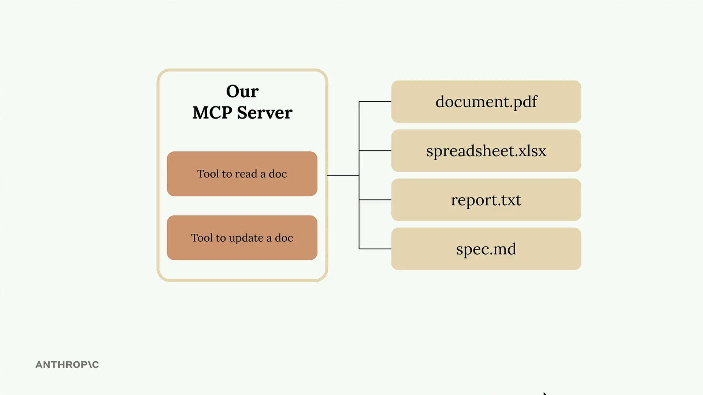

Инструменты в MCP
Чему научитесь
Видео 7:03 и текст урока
К концу урока вы сможете:
- создать MCP-сервер одной строкой через Python SDK;
- описывать инструменты декоратором
@mcp.tool, а их аргументы — аннотациями типов иField; - написать инструменты чтения и правки документа с проверкой ID.
Видео и текст урока.
Смотреть урок на Skilljar Defining tools with MCP · 7:03С официальным Python SDK создавать MCP-сервер гораздо проще. Вместо того чтобы вручную писать сложные JSON-схемы, инструменты можно описывать декораторами, а всю тяжёлую работу переложить на SDK.

В этом примере мы создаём сервер для работы с документами, у которого два основных инструмента: один читает документы, другой их обновляет. Все документы хранятся в памяти в простом словаре: ключи — ID документов, значения — их содержимое.
Создаём MCP-сервер
С Python MCP SDK создать сервер несложно. Он инициализируется всего одной строкой:
from mcp.server.fastmcp import FastMCP
mcp = FastMCP("DocumentMCP", log_level="ERROR")
Документы можно хранить в обычном словаре:
docs = {
"deposition.md": "This deposition covers the testimony of Angela Smith, P.E.",
"report.pdf": "The report details the state of a 20m condenser tower.",
"financials.docx": "These financials outline the project's budget and expenditures",
"outlook.pdf": "This document presents the projected future performance of the system",
"plan.md": "The plan outlines the steps for the project's implementation.",
"spec.txt": "These specifications define the technical requirements for the equipment"
}
Инструменты через декораторы
Инструменты в SDK описываются декораторами. Вместо того чтобы писать JSON-схемы вручную, вы пользуетесь аннотациями типов Python и описаниями полей, а SDK сам генерирует правильную схему, понятную Claude.
Инструмент чтения документа
Первый инструмент читает содержимое документа по ID. Полная реализация:
@mcp.tool(
name="read_doc_contents",
description="Read the contents of a document and return it as a string."
)
def read_document(
doc_id: str = Field(description="Id of the document to read")
):
if doc_id not in docs:
raise ValueError(f"Doc with id {doc_id} not found")
return docs[doc_id]
Декоратор задаёт имя и описание инструмента, а параметры функции — обязательные аргументы. Класс Field из Pydantic добавляет к аргументам описания, которые помогают Claude понять, что передавать в каждый параметр.
Инструмент правки документа
Второй инструмент выполняет в документе простой поиск и замену:
@mcp.tool(
name="edit_document",
description="Edit a document by replacing a string in the documents content with a new string."
)
def edit_document(
doc_id: str = Field(description="Id of the document that will be edited"),
old_str: str = Field(description="The text to replace. Must match exactly, including whitespace."),
new_str: str = Field(description="The new text to insert in place of the old text.")
):
if doc_id not in docs:
raise ValueError(f"Doc with id {doc_id} not found")
docs[doc_id] = docs[doc_id].replace(old_str, new_str)
Инструмент принимает три параметра: ID документа, текст, который нужно найти, и текст замены. Реализация обрабатывает отсутствие документа и выполняет обычную замену строки.
Главные преимущества подхода с SDK
- не нужно вручную писать JSON-схемы;
- аннотации типов дают автоматическую проверку входных данных;
- понятные описания параметров подсказывают Claude, как пользоваться инструментом;
- обработка ошибок естественно сочетается с исключениями Python;
- инструменты регистрируются автоматически через декораторы.
MCP Python SDK превращает создание инструментов из сложной работы над схемами в описание обычных функций Python. Благодаря этому MCP-серверы гораздо проще создавать и поддерживать, а Claude при этом получает правильно оформленные описания инструментов.
Дальше
Следующий урок — «MCP Inspector»: как проверить инструменты сервера во встроенном браузерном инспекторе, не подключая сервер к полноценному приложению.
Оригинал урока: Defining tools with MCP.